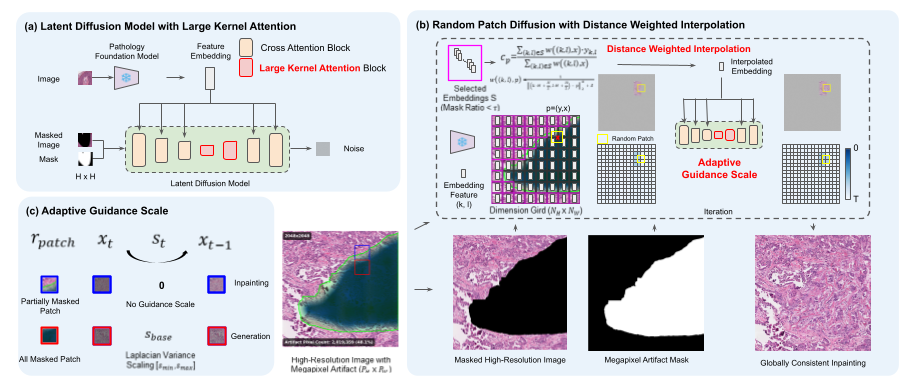

PATCH-TO-GLOBAL / ARTIFACT INPAINTING
被遮住的组织，
向周围借上下文。
RestorePath 不是凭空生成一张病理图，而是输入受损图像与伪影 mask，以未受损区域为依据，补全百万像素尺度的受损区域。它用小图块训练条件潜扩散模型，再通过随机位置的局部更新把大图修复连成整体。
不是把 256 像素修复结果简单放大
气泡、折叠、笔迹可以同时覆盖很多相邻图块。只看一个 256 × 256 图块时，整个视野可能全是伪影：模型既看不到细胞，也拿不到可靠的自身语义。逐块独立修复还会导致边界和组织结构不连续。
直接丢掉这些区域也有风险：如果转移灶很小，恰好位于受损区域，Detect-and-Discard（D&D，检测后丢弃）会连诊断线索一起删去。论文把问题转成“保留可见组织上下文的大范围补全”，而不是“给每个坏图块做颜色变换”。
作者在其分析的 TCGA-BRCA 切片中报告 63.7% 含百万像素伪影。这个比例属于该数据与分析设置，不是所有医院、所有病理切片的普遍发生率。论文覆盖 512–4608 像素尺度的图像，不等于证明可以把完整十万像素级 WSI 一次送进网络。
先训练会看图像、mask 和形态条件的修复模型
ε 是训练时加入的高斯噪声，εθ 是模型预测。训练用 20×、256 × 256 图块；大图推理不要求重新训练一个巨型网络。论文训练阶段的 c 从原图提取，推理时没有缺失区域的真实原图，必须借助后文的插值机制。
LKA 加在哪里，解决什么？
论文将 U-Net 中间阶段与解码器第一个 block 的 cross-attention 替换为 Large Kernel Attention。LKA 把大核运算分解为局部空间、长程空间和通道操作，扩展网络的有效感受野。其他条件通路仍提供 PFM 信息。
不要把 LKA 理解成“每个图块看到了整张 WSI”。它增强当前网络输入内部的空间建模；跨区域信息还依赖条件插值、共享大画布和多次随机采样。局部模型的较大感受野，与跨全切片严格全局一致性不是同一件事。


DWI：整块都是伪影时，向可靠邻居借语义
将图像分为边长 H=256 的网格，计算每块的伪影比例 r。只保留 r ≤ τ 的网格作为条件来源；论文 τ=0.3。因此“有效区域”并不严格等于零伪影，而是伪影占比不超过阈值。
Eq.(3) wᵢ = 1 / (‖qᵢ − p‖₂^α + δ)
论文设置：α=2，δ=10⁻⁶
yᵢ 是有效网格的 UNI 向量，qᵢ 是其中心，p 是当前采样位置。距离越近，权重越大。这里插值的是高维组织特征，不是把邻居像素涂到缺口里；扩散模型再把这个先验变成图像。
条件来源开关：被伪影污染的邻居要不要算？
教学示例：两个来源距目标分别为 1 和 2 个单位，α=2，δ=10⁻⁶。只演示 Eq.(2)–(3) 的归一化权重，不模拟真实组织特征或生成结果。
如果整个大区域找不到任何有效条件来源，插值就失去了信息基础。公开函数没有显式的空集合拒绝分支；应在未来复现中检查这种输入，而不是让一个数值输出被误认成有意义的病理条件。
代码细节：distance_weighted_interpolation 使用距离下限 10⁻⁶，再计算距离幂的倒数；它与论文“分母加 δ”的写法不完全相同，极近距离下尤其需要区分。本页演示按论文公式计算。
随机图块不是“随便抽几块”，而是追踪每处去噪进度
- 初始化共享状态：维护大潜变量画布、历史状态，以及每个潜位置的进度图
times；潜空间按 4 倍空间压缩组织。 - 选择落后位置：代码从全图进度最小的位置中随机选一点，以其为中心裁剪窗口并处理边界。
- 同步窗口内时间：一个窗口可能包含不同去噪进度，使用保存的状态对齐，再进行当前局部去噪。
- 按需取条件：DWI 给出窗口的条件向量；局部 mask 和遮罩图像提供已知内容。
- 写回并推进：只推进当前窗口内处于最小进度的位置。后续重叠窗口会读取已更新的共享状态，直到全图达到停止条件。
- 解码融合：公开实现使用多个偏移网格解码，并以 Hann 窗融合输出，减轻 tile 边缘接缝。
对应 util.py:152–176,252–258,334–443。这里不是 LRDM 示例那种“每一步枚举固定滑窗，然后对全部预测平均”的同一个调度器。随机移动窗口与逐位置进度追踪，是需要单独理解的部分。
AGS：什么时候依赖上下文，什么时候加强语义先验？
先在未遮挡区域计算 Laplacian 方差，作为图像细节复杂度的代理，再映射到基础条件强度 s_base∈[2,7]。随后根据当前窗口的伪影占比决定是否启用：
Eq.(5) ε̃ = ε_uncond + sₜ(ε_cond − ε_uncond)
占比等于 0.99 时仍关闭，超过才开启。只有几乎完全受损的窗口才使用这个强 PFM 条件。当 sₜ=0，“unconditional”只表示没有 PFM 向量引导，仍然保留遮罩图像与 mask 输入，不是完全没有条件。
实际看看 99% 这道门
基础尺度按公开代码的线性归一化与截断计算；只演示门控和数值，不代表生成质量越大越好。用键盘方向键可以检查 99.00% 与 99.01% 的边界。
复杂度不是病理诊断标签；图像纹理、噪声和遮罩边界都可能影响这种代理量。该策略提供一个可执行的启发式门控，不是对条件可靠性的概率估计。
与刚读过的 LRDM，究竟差在哪里？
| 维度 | LRDM | RestorePath |
|---|---|---|
| 目的 | 生成语义与布局受控的大图、制作变体 | 依据可见组织修复已知伪影区域 |
| 输入约束 | 空间排列的 SSL 条件网格 | 遮罩图像 + mask + PFM 条件 |
| 条件缺失 | 参考图或辅助模型提供条件网格 | 从污染较少的网格做距离加权插值 |
| 公开大图调度 | 固定重叠窗口，每步融合局部预测 | 随机窗口 + 每位置进度追踪 |
| 新增机制 | SSL 引导与 MultiDiffusion 组合 | LKA、DWI、基于复杂度和占比的 AGS |
| 共有边界 | 局部模型可扩展不等于恒定成本；生成的形态不等于患者真实组织。 | |
回看 LRDM 技术精读 → 两篇之间有技术联系，但 RestorePath 不是把 LRDM notebook 换一个输入路径就完成的修复任务。
结果要看分工，也要看反例
作者分别为 TCGA-BRCA、Camelyon16、BACH 训练模型，而非一个 checkpoint 统一零样本泛化到三个数据集。主要定量测试使用合成伪影：BRCA 包含多种退化，Camelyon16 与 BACH 限定气泡。不能把这组结果直接当作所有真实伪影上的临床验证。
Table 1：三个完整模型结果
FID_C 使用 CONCH 特征，与 LRDM 的 FID 不能直接放在一起比较；LPIPS_M 与 Emb Sim 也应按原论文评估定义复算，而不是仅凭同名指标替换实现。下表仅转录作者报告。
| 数据集 | LPIPS_M ↓ | FID_C ↓ | Emb Sim ↑ |
|---|---|---|---|
| TCGA-BRCA | 0.4467 | 29.66 | 0.9317 |
| Camelyon16 | 0.3754 | 44.57 | 0.9308 |
| BACH | 0.4418 | 44.37 | 0.9201 |
并非所有指标都最佳：LaMa 在 Camelyon16 和 BACH 的 LPIPS 更低；BACH 去掉 DWI 的 FID_C 为 44.03、Emb Sim 为 0.9232，均略优于完整模型。BRCA 去掉 DWI 则 FID_C 恶化到 110.48。DWI 的价值与伪影类型、剩余纹理和邻域结构有关，不能总结成“任何数据都必须插值”。
下游证据：挽回损失，不是普遍超过干净图
| 输入状态 | Camelyon16 ABMIL Acc.（%） | BACH ResNet50 Acc.（%） |
|---|---|---|
| 原始干净图 | 85.0 ± 1.6 | 86.2 ± 1.8 |
| 受损图 | 73.5 ± 4.6 | 61.0 ± 3.7 |
| 检测后丢弃 | 55.0 ± 2.2 | 64.2 ± 4.1 |
| 修复图 | 84.0 ± 1.2 | 75.5 ± 1.3 |
分别摘自 Table 2 与 Table 3，两列属于不同数据与分类任务，不互相比排名。结果支持在作者设置下修复优于直接用受损图或丢弃，但 BACH 仍明显低于干净图。表中的 ± 按原表保留，不自行解释为置信区间或显著性。
服务器恢复后，我们从哪里开始？
官方上游已放在 E:\code\baselines\RestorePath\upstream，保持原样。固定版本：463442d4a21da8bdf96c9b3e093d9cc93758b433。
| 资源 | 当前已确认 | 未完成部分 |
|---|---|---|
| RestorePath 权重 | 官方 Google Drive 可列出 bach、camelyon16、tcga_brca 三个目录 | 未下载、未加载验证具体 checkpoint |
| 基础模型 | README 提供 UNI 与 VQ-f4 下载入口；推理类会初始化 UNI | UNI 获取权限、权重路径及配置匹配待准备 |
| 推理样例 | notebooks/dataset_samples/infer/tcga_brca 内有同名受损 PNG 与 mask PNG | 未执行模型；不等于完整论文测试集 |
| notebook | 01_artifact_data_generation 与 02_large_image_inpainting 两个入口 | 环境兼容与运行结果待验证 |
静态核对已经发现的注意点
- 依赖文件拼写：README 写
requirements.txt，仓库实际文件为requrements.txt。 - CLI 参数接线：
inference_large_image.py:34为eta = args["sampling_steps"]，没有读取已声明的--eta。这是源码可见的赋值问题，具体运行后果尚未实测；后续应在 patch 层处理。 - 图像和 mask 配对：脚本将路径中的
art_images替换为masks；mask 灰度 >127 转为 1，表示待修复区域。不能把白黑语义反过来。 - 权重目录约定：
get_model读取configs/*-project.yaml和checkpoints/last.ckpt；只给一个任意 YAML 路径不符合当前加载方式。 - 边界条件：有效邻居为空、非方形图像坐标映射、输入尺寸整除约束需要专项核对。当前不声称这些情况已通过。
- 已知像素保真：当前 CLI 解码后直接保存整幅输出，没有最后把原图非 mask 区域逐像素贴回。因此“利用原图上下文”不等于代码保证已知像素完全不变。
恢复实验时优先做：隔离环境 → 匹配 UNI 与 TCGA-BRCA checkpoint/config → 用附带图像和 mask 跑通 → 保存参数、输出和资源消耗。只有有产物、指标能重算后才称为复现；本页不把上述待执行步骤标记为完成。
三个自测问题
全遮挡图块的条件向量从哪里来？
不是从不存在的真实组织提取，而是从伪影占比较低的有效网格提取 UNI 特征，按距离加权插值。若没有可靠来源，不能假装条件仍包含真实诊断信息。
AGS 取 0 是否意味着完全无条件生成？
不是。它关闭 PFM 向量的 CFG 引导，但网络仍接收遮罩图像潜变量和 mask。且论文门槛是严格大于 0.99，不是大于等于。
分类准确率恢复，为什么还不能宣称病理组织被真实还原？
分类器可以受益于统计上合理的合成形态，但局部细胞、罕见病灶或个体特异细节仍可能被错误生成。分类指标不是逐细胞真值，也不是临床安全保证。
原文与代码来源
- 论文 v1 全文：2026-09-21 首发；方法 §2、实验 §3、Table 1–3。MICCAI 2026 标识来自官方仓库，本页未核查会议评审记录。
- 官方仓库固定版本：README、资源与原始框架图。
- util.py：DWI、AGS、随机采样进度与 Hann 融合。
- CLI 推理入口：输入配对、mask 阈值、参数读取与保存。
- 作者预训练模型目录；UNI；VQ-f4。
核查日期：2026-10-15。本文只讲解与静态核对，未运行 GPU 实验；交互采用教学输入，不生成医学图像。
返回 RestorePath 条目 →